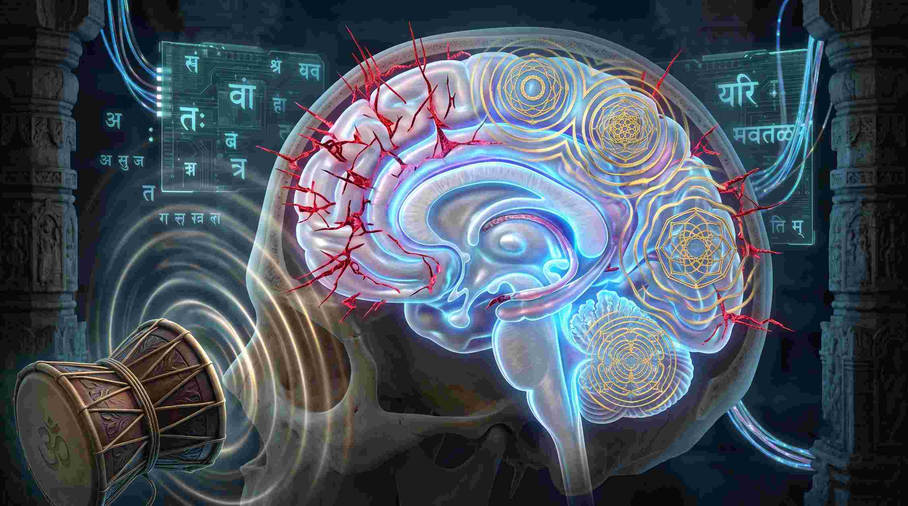
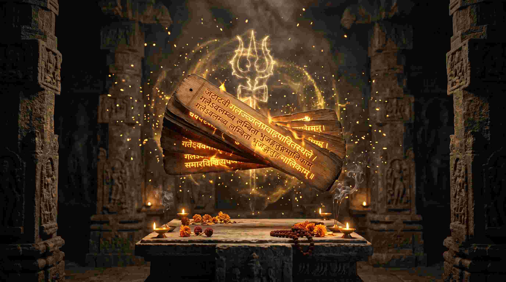

जब एक परम ज्ञानी, महापराक्रमी, और असीमित अहंकार से भरा हुआ राजा—लंकापति रावण—भगवान शिव को प्रसन्न करने के लिए कैलाश पर्वत को उठाने लगा, तो शिव ने मात्र अपने पैर के अंगूठे से उसे दबा दिया। उस पीड़ा में, जब रावण के हाथ कुचले जा रहे थे, तब उसने जिस असाधारण, लयबद्ध और उग्र स्तोत्र की रचना की, उसे ही आज हम 'शिव तांडव स्तोत्र' (Shiv Tandav Stotram) के नाम से जानते हैं।
लेकिन एक वैदिक ज्योतिषी होने के नाते मैं रावण को केवल एक राक्षस नहीं, बल्कि संस्कृत छंद और संगीत का महान विद्वान और शिव का परम भक्त मानता हूँ। यह 15 श्लोकों वाला स्तोत्र अपनी लय, अनुप्रास और भक्ति-भाव के लिए अद्वितीय है।
"जब आप 'डमड्डमड्डमड्डमन्निनाद...' का उच्चारण करते हैं, तो ऐसा लगता है मानो भगवान शिव का डमरू स्वयं बज रहा हो — यही इस स्तोत्र की अद्भुत लय और ऊर्जा है।"

2. सम्पूर्ण शिव तांडव स्तोत्र: 15 श्लोक (अर्थ सहित)
यहाँ रावण द्वारा रचित मूल 15 श्लोकों का संग्रह, और उनका सरल हिंदी अर्थ दिया जा रहा है:

जटाटवीगलज्जलप्रवाहपावितस्थले
गलेऽवलम्ब्य लम्बितां भुजङ्गतुङ्गमालिकाम्।
डमड्डमड्डमड्डमन्निनादवड्डमर्वयं
चकार चण्डताण्डवं तनोतु नः शिवः शिवम्॥ १ ॥
अर्थ: जिन शिव जी की सघन जटा-रूपी वन से बहने वाली गंगा की धारा से उनका कंठ पवित्र हो रहा है, जिनके गले में बड़े-बड़े सर्पों की माला लटक रही है, और जो 'डमड्-डमड्-डमड्' की भयंकर ध्वनि करते हुए अपने डमरू को बजाकर प्रचण्ड तांडव नृत्य कर रहे हैं—वे भगवान शिव हमारा कल्याण करें।
जटाकटाहसम्भ्रमभ्रमन्निलिम्पनिर्झरी
विलोलवीचिवल्लरीविराजमानमूर्धनि।
धगद्धगद्धगज्ज्वलल्ललाटपट्टपावके
किशोरचन्द्रशेखरे रतिः प्रतिक्षणं मम॥ २ ॥
अर्थ: जिनकी जटाओं रूपी कड़ाहे में देव-नदी गंगा की लहरें भंवर ले रही हैं, जिनके मस्तक पर 'धगद्-धगद्' की भयानक ध्वनि के साथ अग्नि प्रज्वलित हो रही है, और जिनके सिर पर बाल-चंद्रमा (द्वितीया का चाँद) सुशोभित है—उन भगवान शिव में मेरी हर पल प्रीति (अनुराग) बनी रहे।
धराधरेन्द्रनंदिनीविलासबन्धुबन्धुर
स्फुरद्दिगन्तसंततिप्रमोदमानमानसे।
कृपाकटाक्षधोरणीनिरुद्धदुर्धरापदि
क्वचिद्दिगम्बरे मनो विनोदमेतु वस्तुनि॥ ३ ॥
अर्थ: पर्वतराज हिमालय की पुत्री (पार्वती जी) की सुंदर लीलाओं से जिनका मन हमेशा आनंदित रहता है, जिनकी कृपा दृष्टि मात्र से बड़ी से बड़ी और अनियंत्रित विपत्तियां (आपदाएं) दूर हो जाती हैं—उन दिगम्बर (दिशाओं को ही वस्त्र मानने वाले) भगवान शिव में मेरा मन विनोद (आनंद) प्राप्त करे।
जटाभुजंगपिंगलस्फुरत्फणामणिप्रभा
कदम्बकुंकुमद्रवप्रलिप्तदिग्वधूमुखे।
मदान्धसिन्धुरस्फुरत्त्वगुत्तरीयमेदुरे
मनो विनोदमद्भुतं बिभर्तु भूतभर्तरि॥ ४ ॥
अर्थ: जिनकी जटाओं में लिपटे हुए लाल-भूरे सर्पों के फन की मणियों की चमक, दिशाओं रूपी स्त्रियों के मुख पर कुमकुम के समान रंग बिखेर रही है, जो मतवाले हाथी की छटपटाती हुई खाल का सुंदर वस्त्र धारण करते हैं—उन भूतनाथ (प्राणियों के रक्षक) भगवान शिव में मेरा मन अद्भुत आनंद का अनुभव करे।
सहस्रलोचनप्रभृत्यशेषलेखशेखर-
प्रसूनधूलिधोरणीविधूसराङ्घ्रिपीठभूः।
भुजङ्गराजमालया निबद्धजाटजूटकः
श्रियै चिराय जायतां चकोरबन्धुशेखरः॥ ५ ॥
अर्थ: इन्द्र (सहस्रलोचन) आदि समस्त देवताओं के सिर के मुकुटों में लगे फूलों की धूलि से जिनका चरण-पीठ (पैर रखने की जगह) धूसरित (मैला) हो गया है, जिनकी जटाएं सर्पराज की माला से बंधी हैं, और जिनके सिर पर चकोर का मित्र (चंद्रमा) सुशोभित है—वे भगवान शिव हमें चिरकाल (लंबे समय) तक संपत्ति प्रदान करें।
ललाटचत्वरज्वलद्धनञ्जयस्फुलिङ्गभा-
निपीतपञ्चसायकं नमन्निलिम्पनायकम्।
सुधामयूखलेखया विराजमानशेखरं
महाकपालि सम्पदे शिरो जटालमस्तु नः॥ ६ ॥
अर्थ: जिनके मस्तक (ललाट) की भयंकर प्रज्वलित अग्नि की चिनगारियों ने कामदेव (पंचसायक) को भस्म कर दिया, जिन्हें देवों के नायक (इन्द्र) नमन करते हैं, जिनके सिर पर अमृतमयी किरणों वाला चंद्रमा विराजमान है—उन महाकपाली शिव की जटाएं हमें सिद्धियां और संपदाएं प्रदान करें।
करालभालपट्टिकाधगद्धगद्धगज्ज्वल-
द्धनंजयाहुतीकृतप्रचंडपंचसायके।
धराधरेन्द्रनंदिनीकुचाग्रचित्रपत्रक-
प्रकल्पनैकशिल्पिनि त्रिलोचने रतिर्मम॥ ७ ॥
अर्थ: जिनके विकराल मस्तक पर 'धगद्-धगद्' जलती हुई अग्नि ने प्रचंड कामदेव को आहुति बनाकर भस्म कर दिया, और जो पर्वतराज-पुत्री पार्वती जी के स्तनों पर चित्रकारी (सजावटी रेखाएं) करने वाले एकमात्र चतुर शिल्पी (कलाकार) हैं—उन त्रिलोचन (तीन नेत्रों वाले) शिव में मेरी प्रीति हो।
नवीनमेघमण्डली निरुद्धदुर्धरस्फुरत्-
कुहूनिशीथिनीतमः प्रबन्धबद्धकन्धरः।
निलिम्पनिर्झरीधरस्तनोतु कृत्तिसिन्धुरः
कलानिधानबन्धुरः श्रियं जगद्धुरंधरः॥ ८ ॥
अर्थ: जिनका कंठ (गर्दन) अमावस्या की अर्धरात्रि के घने अंधकार और नवीन बादलों की घटाओं के समान अत्यंत काला है, जो देव-नदी गंगा को धारण करते हैं, जो गजचर्म (हाथी की खाल) पहने हैं, जो बाल-चंद्रमा से सुशोभित हैं और जो पूरे जगत का भार उठाते हैं—वे भगवान शिव हमारी संपत्ति का विस्तार करें।
प्रफुल्लनीलपंकजप्रपंचकालिमप्रभा-
विडम्बि कंठकन्दलीरुचि प्रबन्धकन्धरम्।
स्मरच्छिदं पुरच्छिदं भवच्छिदं मखच्छिदं
गजच्छिदांतकच्छिदं तमन्तकच्छिदं भजे॥ ९ ॥
अर्थ: जिनका कंठ खिले हुए नीले कमल के समान सुंदर और श्यामल है। जिन्होंने कामदेव को मारा, त्रिपुरासुर का वध किया, जो संसार के बंधनों (भव) को काटते हैं, जिन्होंने दक्ष के यज्ञ (मख) को नष्ट किया, गजासुर को मारा, और जिन्होंने मृत्यु के देवता यम (अंधक/अंतक) का भी मान मर्दन किया—मैं उन शिव को भजता हूँ।
अखर्वसर्वमंगला कलाकदम्बमञ्जरी-
रसप्रवाह माधुरी विजृम्भणा मधुव्रतम्।
स्मरान्तकं पुरान्तकं भवान्तकं मखान्तकं
गजान्तकान्तकान्तकं तमन्तकान्तकं भजे॥ १० ॥
अर्थ: जो सर्वकल्याणमयी पार्वती जी की कलाओं रूपी कदंब की मंजरियों से बहने वाले आनंद-रस के आस्वादन करने वाले भ्रमर (भंवरे) हैं। जो कामदेव, त्रिपुरासुर, भव-बंधन, दक्ष-यज्ञ, गजासुर, अंधकासुर और यमराज का भी अंत करने वाले हैं—मैं उन भगवान शिव का भजन करता हूँ।
जयत्वदभ्रविभ्रमभ्रमद्भुजंगमश्वस-
द्विनिर्गमत्क्रमस्फुरत्करालभालहव्यवाट्।
धिमिद्धिमिद्धिमिध्वनन्मृदंगतुंगमंगल-
ध्वनिक्रमप्रवर्तित प्रचण्डताण्डवः शिवः॥ ११ ॥
अर्थ: जिनके मस्तक की भयानक अग्नि भयंकर गति से घूमते हुए सर्पों की फुफकार से और अधिक भड़क रही है, और जो 'धिमिद्-धिमिद्-धिमिद्' की मंगलकारी मृदंग-ध्वनि के साथ प्रचंड तांडव नृत्य कर रहे हैं—उन शिव जी की जय हो!
दृषद्विचित्रतल्पयोर्भुजङ्गमौक्तिकस्रजो-
र्गरिष्ठरत्नलोष्ठयोः सुहृद्विपक्षपक्षयोः।
तृणारविन्दचक्षुषोः प्रजामहीमहेन्द्रयोः
समप्रवृत्तिकः कदा सदाशिवं भजाम्यहम्॥ १२ ॥
अर्थ: कठोर पत्थर और कोमल बिस्तर, सर्प और मोतियों की माला, बहुमूल्य रत्न और मिट्टी के ढेले, मित्र और शत्रु पक्ष, घास के तिनके और कमल जैसे नेत्रों वाली स्त्री, तथा प्रजा और राजा—इन सभी के प्रति समदृष्टि (समान भाव) रखते हुए, मैं कब भगवान सदाशिव की पूजा कर सकूंगा?
कदा निलिम्पनिर्झरीनिकुञ्जकोटरे वसन्
विमुक्तदुर्मतिः सदा शिरःस्थमञ्जलिं वहन्।
विलोललोललोचनो ललामभाललग्नकः
शिवेति मन्त्रमुच्चरन्कदा सुखी भवाम्यहम्॥ १३ ॥
अर्थ: मैं कब अपने दुष्ट विचारों (पापों) से मुक्त होकर, देव-नदी गंगा के किनारे किसी गुफा में निवास करूंगा? कब मैं अपने मस्तक पर अंजलि (हाथ जोड़कर) बांधे हुए, चंचल नेत्रों से मुक्त होकर, माथे पर तिलक लगाकर और 'शिव-शिव' मंत्र का उच्चारण करते हुए सुखी होऊँगा?
इमं हि नित्यमेवमुक्तमुत्तमोत्तमं स्तवं
पठन्स्मरन्ब्रुवन्नरो विशुद्धिमेति सन्ततम्।
हरे गुरौ सुभक्तिमाशु याति नान्यथा गतिं
विमोहनं हि देहिनां सुशङ्करस्य चिन्तनम्॥ १४ ॥
अर्थ: जो भी मनुष्य इस सर्वोत्तम स्तोत्र का नित्य पाठ करता है, स्मरण करता है और इसका उच्चारण करता है, वह निरंतर पवित्रता को प्राप्त होता है। वह परम गुरु भगवान शिव में शीघ्र ही उत्तम भक्ति प्राप्त कर लेता है; उसके लिए मोक्ष का कोई अन्य मार्ग नहीं है। भगवान शंकर का चिंतन मात्र ही मनुष्यों के मोह (Delusion) को नष्ट कर देता है।
पूजावसानसमये दशवक्त्रगीतं
यः शम्भुपूजनपरं पठति प्रदोषे।
तस्य स्थिरां रथगजेन्द्रतुरङ्गयुक्तां
लक्ष्मीं सदैव सुमुखीं प्रददाति शम्भुः॥ १५ ॥
इति श्रीरावणकृतं शिवताण्डवस्तोत्रं सम्पूर्णम्।
अर्थ (फलश्रुति): सायं काल (प्रदोष के समय) में शिव पूजा समाप्त होने के बाद, जो कोई भी रावण (दशवक्त्र) द्वारा गाए गए इस स्तोत्र का पाठ करता है, भगवान शम्भु उसे रथ, हाथी और घोड़ों (वाहनों) से युक्त स्थिर लक्ष्मी (समृद्धि) सदैव प्रदान करते हैं।
3. शिव तांडव स्तोत्र पाठ का महत्व
स्तोत्र की फलश्रुति और भक्तों की परंपरा के अनुसार इसका पाठ इन कारणों से विशेष माना जाता है:
- नेतृत्व और साहस: जो लोग हमेशा डरे रहते हैं, उनके लिए शिव की शरण का यह स्तोत्र आत्मबल और साहस देने वाला माना जाता है।
- स्पष्ट उच्चारण का अभ्यास: इसके जटिल और अनुप्रास-युक्त शब्दों का नियमित सस्वर पाठ उच्चारण को स्पष्ट करने और संस्कृत पढ़ने का आत्मविश्वास बढ़ाने में सहायक है।
- स्थिर लक्ष्मी की प्राप्ति: जैसा कि 15वें श्लोक में वर्णित है, प्रदोष काल में इसके पाठ से भगवान शिव की कृपा से 'स्थिर लक्ष्मी' प्राप्त होने का वर्णन है।
4. तांडव स्तोत्र के पाठ का सही विधान (Action Plan)
रावण ने यह स्तोत्र तब गाया था जब वह भयंकर पीड़ा में था। यदि आप भी जीवन के किसी भी क्षेत्र में भयंकर पीड़ा या संघर्ष झेल रहे हैं, तो इसे इस प्रकार पढ़ें:
- समय (प्रदोष काल): सूर्यास्त के समय (Twilight) जब दिन और रात मिल रहे हों, तब इसका पाठ करना सबसे अधिक फलदायी है।
- लय (Rhythm): इस स्तोत्र को शांत मन से नहीं, बल्कि पूरे जोश, ऊर्जा और डमरू की ताल (Rhythm) के साथ ऊंचे स्वर में पढ़ें। पूरे मन और भक्ति-भाव से, खुलकर गाएं।
- दिशा: उत्तर (North) या पूर्व (East) दिशा की ओर मुख करके बैठें। सामने भगवान शिव या शिवलिंग का ध्यान करें।
निष्कर्ष: शिव-भक्ति का उत्सव
शिव तांडव स्तोत्र केवल एक कविता नहीं है; यह शिव-भक्ति का उत्सव है। जब आप रावण के इस स्तोत्र को गाते हैं, तो आप भगवान शिव से यह कहते हैं कि आप किसी भी विपत्ति से डरने वाले नहीं हैं — और यही भाव आपको आत्मबल देता है।